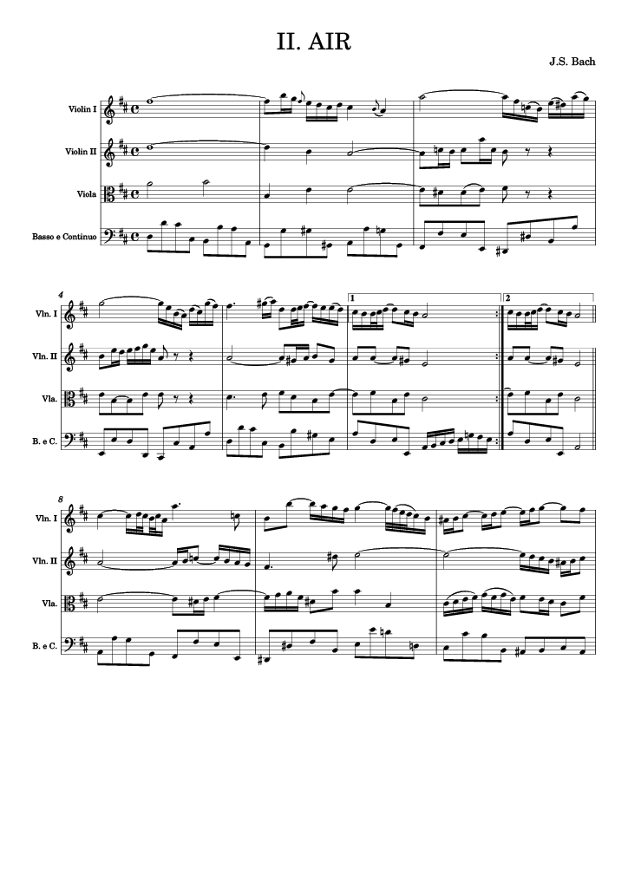
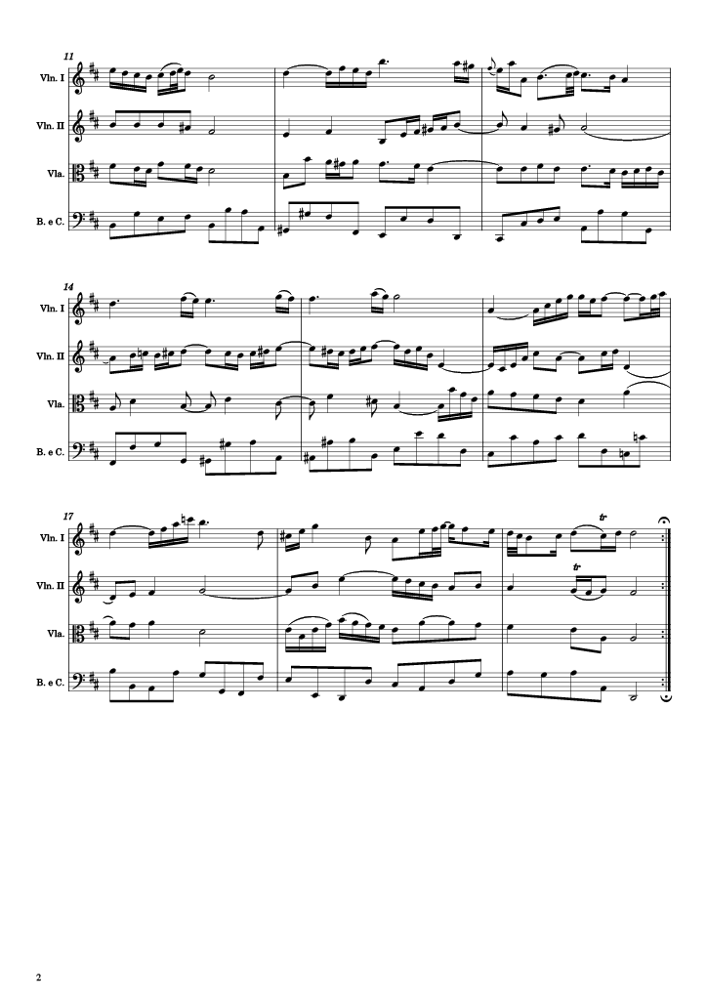

This lab explores how music notation data is represented in a score. Here, we take a pdf file of a musical score and convert it to MuseScore using the software's Optical Music Recognition (OMR) package.
I chose to transcribe Bach's "Air" from the Suite No. 3 in D major, BWV 1068 as it was discussed on the Vinyl Tap show as an influence on Procol Harum's A Whiter Shade of Pale. In addition, the MusicXML files for this piece were available on IMSLP. The original score is available here.
Below is the edited MuseScore output, which has been corrected manually. Alternatively, view the MuseScore file or download the pdf.
|  |  |
For comparison, this is the unedited MuseScore output.
The conversion from pdf to MuseScore file keeps most of the structure of the score (parts) and most pitches, but some note and timing information (rhythm and keeping to time signature) are lost. Compare for example mm 8 in both scores, and the Violin II part in mm 14, where the accidental is interpreted as an additional note. (This would be impossible to play.) Other information is extracted inconsistently, such as ties and slurs. In mm 8-9, the ties in both violin parts are kept, but in mm 14-15 the viola part is missing some of its tie notes. Even inside a part some ties are extracted inconsistently.
For playback of a piece, the most important, top-level information is that of score structure, pitch, and rhythm. While the MuseScore conversion clearly is not a perfect transcription, it nevertheless succeeds in extracting most of this data.
The OMR package loses score information. I wanted to see, in comparison, how much information could be retrieved when the score is encoded in a different format than an image.
The score is available on IMSLP as a folder of MusicXML files. Each part in the score is described separately. For example, the Violin I file for the Air contains the layout description for all parts and the Violin I notation data, but while the other parts do appear, they are left blank in the Violin I file. To produce a score from these files, I chose to use Lilypond for the engraving. Lilypond however expects a single xml file per score. From the five MusicXML files describing the piece, I manually selected the xml tags and notation data that Lilypond needed and placed them into a test xml file. Then, I converted it to Lilypond format and generated this score.
Immediately obvious is that most information corresponds with the notation in the original score. This is because the MusicXML format, unlike pixels in an image, can store data with meaning; that is, the database structure includes some reference to what the data means in a musical sense. For example, each note contains data about the pitch, the octave, the type (quarter, sixteenth etc.), the voice it belongs to etc.
There are some inconsistencies between the Lilypond output and the original score, which may be due to different source editions or the fact that the MusicXML file is itself a conversion from a different format (see heading comment in the test xml file). For example, in mm 3, Viola part, the D# may be tied. In mm 6 the repeat sign and ending bracket have not been formatted properly. In mm 16 the Viola note stems should be linked as the Basso Continuo stems are. Some articulation is missing, such as in mm 17 (Viola part) and mm 19 (Violin II).
Finally, when looking through the xml file we can see that whatever meaningful information is encoded there will be rendered when converted to a visible score. This is not guaranteed with an image because the data in the image needs to be interpreted. If the information is not in the xml file, however, it won't appear: for example, mm 9 the Basso Continuo part is missing a D natural (different editions' standards?). The note at line 6450 in the test xml file does not contain an <accidental> tag, so the natural is not printed until the next note.